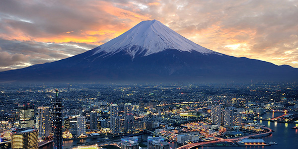

Maldives
Known for its extensive reefs,blue lagoons and beaches. Made of 1000 coral islands, Maldives is a nation in the indian ocean.

Visit Maldives
Mombasa
Oldest and largest city on the coast of kenya, Mombasa is known for its beautifull beaches with crystal clear blue oceans and its aquatic life, as well as its swahili cuisine.

Visit Mombasa
Hawaii
Located in the central pacific Hawaii is a isolated volcanic archipelago and also a state of the United States of America. Consisting of 6 islands, Oahu being the largest. Known for its golden beaches and waterfalls.

Visit Hawaii
Goa
Former Portuguese colony Goa is now a state in western India with coastlines stretching to the arabian sea. Known for its tropical spice plantations, laid-back fishing villages as well as its various beaches.

Visit Goa
Tokyo
Being a very busy city as well as the capital of Japan, Tokyo mixes the ultramodern as well as the traditional. Known for its popular cuisine as well as large gardens and a beautifull skyline and its technological development.
Visit Tokyo
Paris
Being a global center for art, fashion and culture, Paris is one of the major European cities, As well as the capital of France. known for its cityscape that is crisscrossed by wide boulevards and the River Seine as well as the iconis Eiffel tower as well as the delicacies the country presents. Bonjour!

Visit Paris